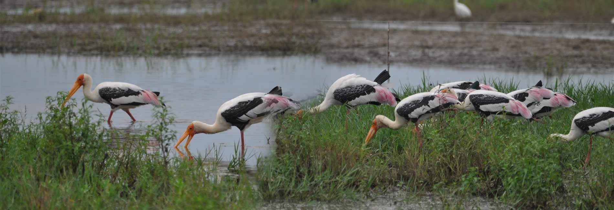
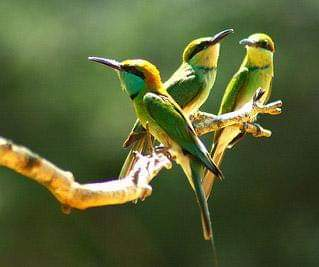
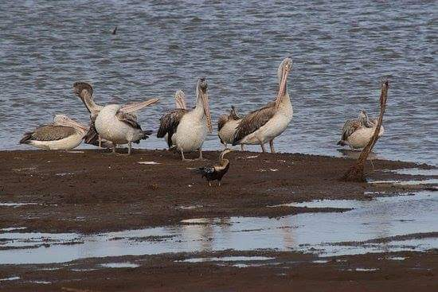
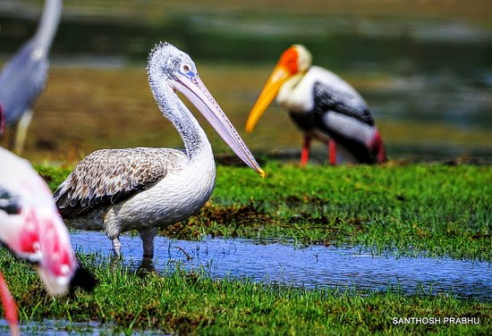
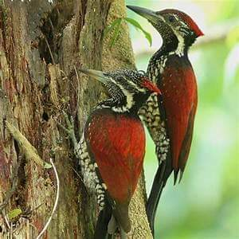
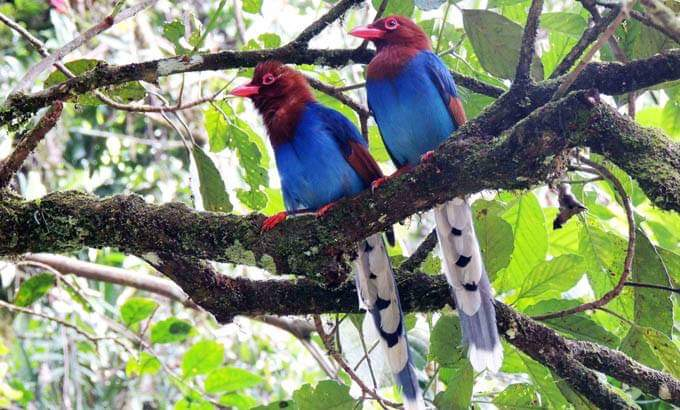
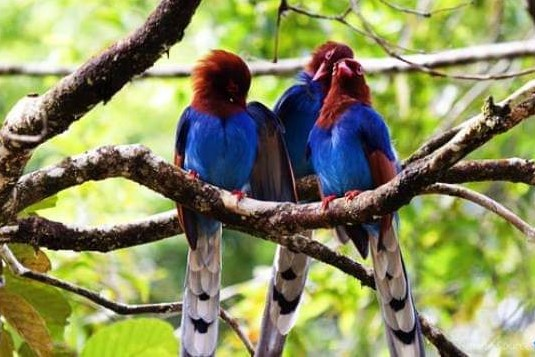
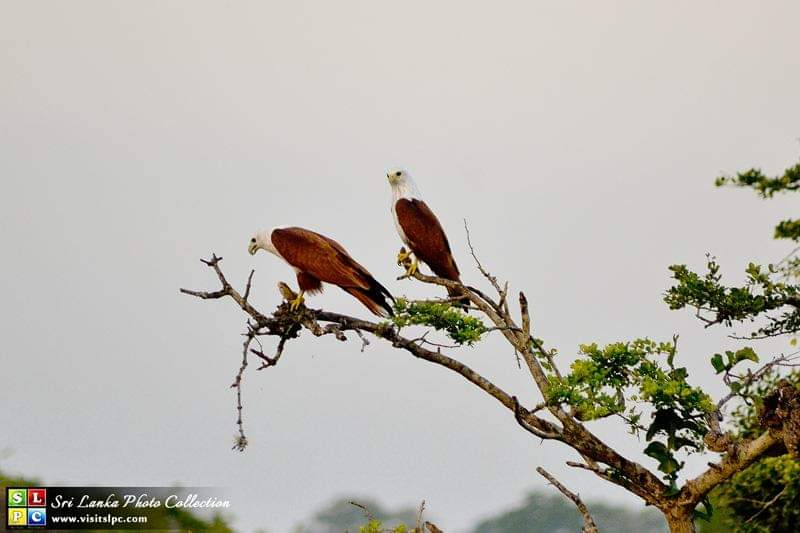
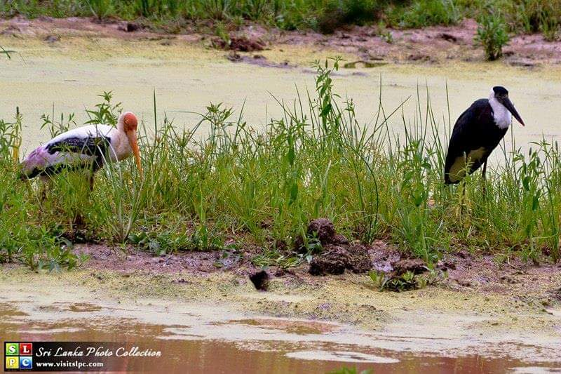
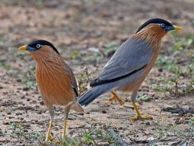

tour with Josh tours in sri lanka
It's all about happiness...

It's all about happiness...
These photographic tours are focused on the photographer whose primary interest is to photograph top nature locations in Sri Lanka. Usually, photographers have to go out on their own or join a birding tour where their photography needs often conflicts with the goals of serious birders and nature lovers. Even though our Bird Photography Tours in Sri Lanka looks like a birding tour, the emphasis is on photography opportunities rather than species count, while still endeavoring to seek a large spectrum of birds.What this also means that any of our tours listed, can be converted to suit a photographer. This tour is a great holiday in Sri Lanka you can get for an attractive price.
A veteran guide from Tour With Josh team, with knowledge and ample experience in photography tours will guide you. He will make sure that you will get optimal time for photography at the main attraction of sites, for a really local perspective. Please read our photography tour reviews to see what our clients say.
In Tour With Josh's Bird Photography Tours in Sri Lanka you will have very good chances to photograph beautiful birds.No doubt that the tours are full-fledged bird photography tours in Sri Lanka where you will encounter mixed species bird flocks (Bird Waves), endemic and beautiful birds. We will cover major bird watching sites in Sri Lanka that has excellent photo opportunities. The sites include Bundala National Park & Ramsar Wetland, Horton Plains, Kandy (Peradeniya) - Royal Botanical Gardens, Kitulgala Rainforest, Minneriya National Park, Sinharaja Rain Forest, Talangama Wetland, Udawalawa National Park, Wilpattu National Park, Wasgamuwa National Park and Yala National Park.
Throughout the tour, you will have a variety of comfortable accommodation and taste delicious Sri Lankan food.
For enquiries please contact.

Duration: This can be a short or a long tour. Let us know how many days you would like to tour.
Tour Guide: Our tour guides are friendly, Sri Lankan, well experienced and has a very good knowledge of birds of Sri Lanka, birding sites and National Parks, and the needs of birds photographers. All our guides are licensed tour guids from the Tourist Board of Sri Lanka. Walk With Shan's guides will aslo use the services of local tour guides, villagers in certain places.
Special Interests: Let us know clearly, what your main or specific photographic themes and interests are. Do you want to focus more on birds, nature. Or, would you like to have a mixture of these.
Photography sites: Below we have listed some of the best sites for bird and nature photographers. Give us your guideline we will help you to select the sites.
It will be very useful to telephone you to discuss your individual travel arrangements. So if you wish, please let us know your telephone number when you enquire.
For enquiries please contact.
Here is a bird and Nature Photography Tours in Sri Lanka - a sample itinerary
10 Days. Includes 8 top locations for birds and nature photography
Day 01 - Arrival and photographing birds around Talangama Wetland
Day 02 /03 - walking and photographing birds in Kitulgala Rain Forest and village areas
Day 04 - Birding and photographing in Nuwara Eliya Highlands
Day 05 - Hike in Horton Plains National Park and photographing
Day 06 - Photographing waders and water birds in Bundala Ramsar Wetland and Bundala National Park
Day 07 - photographing in Yala National Park ( water birds )
Day 08 / 09 - Photographing birds including many endemic birds, and other wildlife in Sinharaja Rain Forest
Day 10 - Departure
For enquiries please contact.
You travel by a comfortable air conditioned mini coach or a car. This is your primary vehicle.
In National Parks, we use four-wheel-drive jeeps for Safari. Transfer to Martin's Lodge will be by a Jeep. Crossing the Kelani River at Kitulgala is by dugout canoe or narrow suspension bridge.
Your tour guide will be an English speaking, experienced, friendly chauffer guide from our team, with a Tour Guide License from the Tourist Board of Sri Lanka. He will have in-depth knowledge in birds in Sri Lanka. He will have prior experience in photographic tours and will helpfully cater to needs of a photographer.
Yes, of course.
We will let you know what our vehicle is. And you can also tell us how large your equipment and baggage are.
We provide one jeep for two photographers or clients. Therefore, there is enough space to handle long lenses and to take other equipment.
Yes. You need to bring rain covers for you and your equipment and baggage.
Yes, please do bring them. These are hard to find in local shops.
There are leeches especially in Rain Forest areas. If you have your own leach-socks or leach-stockings please bring. If you do not have, let us know and we will provide local pairs.
Mostly short and easy. However, the going can be more moderate at times, along some forest trails. Sturdy waterproof walking shoes or boots are recommended.
Rain Forest areas like Sinharaja and Kitulgala: There is heavy sunlight at daytime and the nights are cooler. If you need extra blankets, the accommodation place will provide them. Rain can occur at any time and please be ready for this.
Dry Zone Forest areas like Yala and Bundala: It is usually hot during daytime. In open areas, you should use your sun protection cream / Sun Block / Sun Cream.
Highland areas like Nuwara Eliya and Horton Plains: Normally daytime temperature is not so high. However, still we recommend using sun protection cream / Sun Block / Sun Cream. At night, it is very cool and you need to have suitable clothing.
While travelling if you want to take photos of a bird please do not hesitate to ask the driver to stop the vehicle. He will stop at all possible places and will assist you. We have especially instructed our chauffer guides regarding this.
All Accommodations are on half board (Breakfast and Dinner) basis at comfortable mid-grade or average tourist hotels and lodges. Martin's Lodge in Sinharaja is more rustic and remote.
In all accommodation places, you have en suite, private toilets and bathrooms.
For enquiries please contact.
Yala National Park - This Park is situated in the Dry Zone in Sri Lanka, comprising of a range of habitats including scrub jungles, water reservoirs, brackish lagoons and riverine habitats.This is the best park in the country to see and photograph birds
|  |  |  |
Bundala wetland - This is an internationally important wintering ground for migratory water birds in Sri Lanka and was the first wetland declared as a Ramsar Wetland in Sri Lanka. It comprises of a scrub jungle bordering the sea together with large shallow pools. It is a very good place to watch water birds & migrant waders during northern winter-October to March.
|  |
Sinharaja Rain Forest - This is a great place for bird watching and photography. This is the last remaining significant primary forest patch in the island. It is home to most endemic flora & fauna species. This is the single most important site in Sri Lanka in term of endemic birds. Here you can encounter spectacular mixed feeding flocks of birds.
|  |  |  |
Kitulgala Rain Forest - Kelani Valley forest reserve is established as a forest reserve to protect the watershed of Kelani River. It is home to many of Sri Lanka's endemic fauna and flora. The forest is a secondary lowland rainforest on the lower slope with the forest extending up to the higher elevations, contiguous with the Peak Wilderness Sanctuary. Kitulgala also has several waterfalls and caves of ancient times.
The Bridge on the River Kwai is a 1957 British World War II film by David Lean, of which the scene creation was done in Sri Lanka and many of them were at Kitulgala area including the bridge explosion
Horton plains cloud forest - This is undoubtedly one of the world's best nature reserves and nature photography venues. This area is home to a wide variety of flora and fauna, including many migratory birds. It also features many interesting attractions such as Bakers Falls,Chimney Pool and the famous World's End (a 3700 ft sheer drop that offers fabulous views of the tea estates below and all the way out to the distant southern coastline).
|  |  |  |
Sigiriya sanctuary - Situated in and around the famous Sigiriya Rock this sanctuary is adjacent to the Minneriya National park. It is mainly a dry evergreen forest also with shrub forests, and dry deciduous forest. This is an ideal place to photograph forest birds such as Peacocks, Eagles and beautiful migrant Indian Pitta.
Anawilundawa wetland - Another Ramsar Wetland in Sri Lanka. Very good area for photographing birds. Today this area is very popular among bird watchers and nature lovers. During migration season, a large variety of birds can be seen using this area as feeding ground as well as breeding ground. Anawilundawa covers 1,397ha lying between the costal line and the Negombo - Putlam railway line. This wetland consists of six ancient manmade tanks and 3 peripheral tanks with paddy fields and village areas.
Wilpattu national park - This is the largest and one of the oldest National Parks in Sri Lanka. Wilpattu is among the top national parks world renowned for its Leopard. In Wilpattu National Park mainly salt grass, low scrubs and monsoon forests are found. This national park is spotted with innumerable lakes.
Talangama wetland - This wetland, on the outskirts of Colombo, is bordered by motorable roads, which makes access easy for wildlife enthusiasts. The complex of ponds, canals and paddy fields make it a rich and varied wetland site. Over a hundred species of birds have been recorded in this area including Purple-faced Leaf Monkeys, an endangered endemic species.
Udawalawa national park - Udawalawe is a superb place to watch and photograph birds of prey such as all kinds of eagles in Sri Lanka. It lies South of the central hills of the island, and it surrounds the manmade Reservoir of Udawalawe, which is part of the park. Udawalawe is a mixture of abandoned teak plantations, scrub jungles & grasslands.
Knuckles Mountain Range - This mountain range (so-called because its appearance resembles a set of knuckles in a closed fist) is a major eco-tourism venue of Sri Lanka and has been declared a conservation area, now known as the Knuckles National Heritage and Wilderness Area. The region stretches in an impressive 155 sq km that contains five major forest formations, a wide variety of rare and endemic flora and fauna and some breathtaking mountain scenery of Sri Lanka
For enquiries please contact.